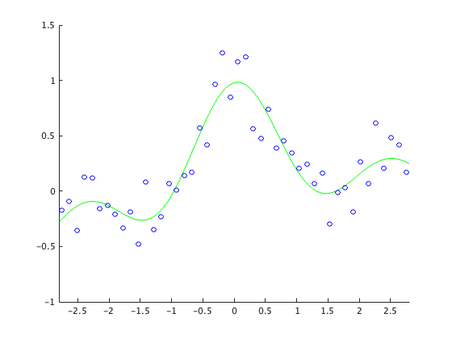

clear all; rand('state',0); randn('state',0);
n=50; N=1000; NumTrain=10;
x=linspace(-3,3,n)';
X=linspace(-3,3,N)';
pix=pi*x;
y=sin(pix)./(pix)+0.1*x+0.2*randn(n,1);
h=linspace(0.01,1,100);
lamb=linspace(0.01,1,100);
c = cvpartition(n,'KFold',NumTrain);
idx=[1:n];
k_min_error=[];
lamb_min_error=0;
hh_min_error=0;
min_error=10000;
enter_num=0;
for h_num=1:length(h)
for lamb_num=1:length(lamb)
hh=2*h(h_num)^2;
l=lamb(lamb_num);
error_time=0;
for i=1:NumTrain
idx_train=find(training(c, i));
idx_test=idx(~ismember(idx,idx_train));
x2=x.^2;
k=exp(-(repmat(x2(idx_train),1,length(x2(idx_train)))+repmat(x2(idx_train)',length(x2(idx_train)),1)-2*x(idx_train)*x(idx_train)')/hh);
K=exp(-(repmat(x2(idx_test),1,45)+repmat(x2(idx_train)',5,1)-2*x(idx_test)*x(idx_train)')/hh);
t=(k^2+l*eye(length(x2(idx_train)))) \ (k*y(idx_train));
F=K*t;
error_time=error_time+norm(F-y(idx_test));
end
if (error_time/NumTrain)<(min_error)
hh_min_error=hh;
lamb_min_error=l;
min_error=error_time/NumTrain;
k_min_error=k;
enter_num=enter_num+1;
end
end
end
x2=x.^2; X2=X.^2;
k=exp(-(repmat(x2,1,n)+repmat(x2',n,1)-2*x*x')/hh_min_error);
K=exp(-(repmat(X2,1,n)+repmat(x2',N,1)-2*X*x')/hh_min_error);
t=(k^2+lamb_min_error*eye(n))\(k*y);
F=K*t;
figure(1); clf; hold on; axis([-2.8 2.8 -1 1.5]); plot(X,F,'g-'); plot(x,y,'bo');
